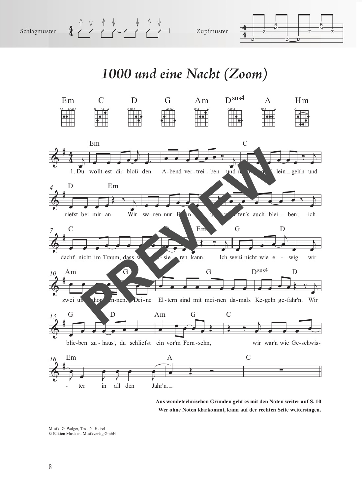
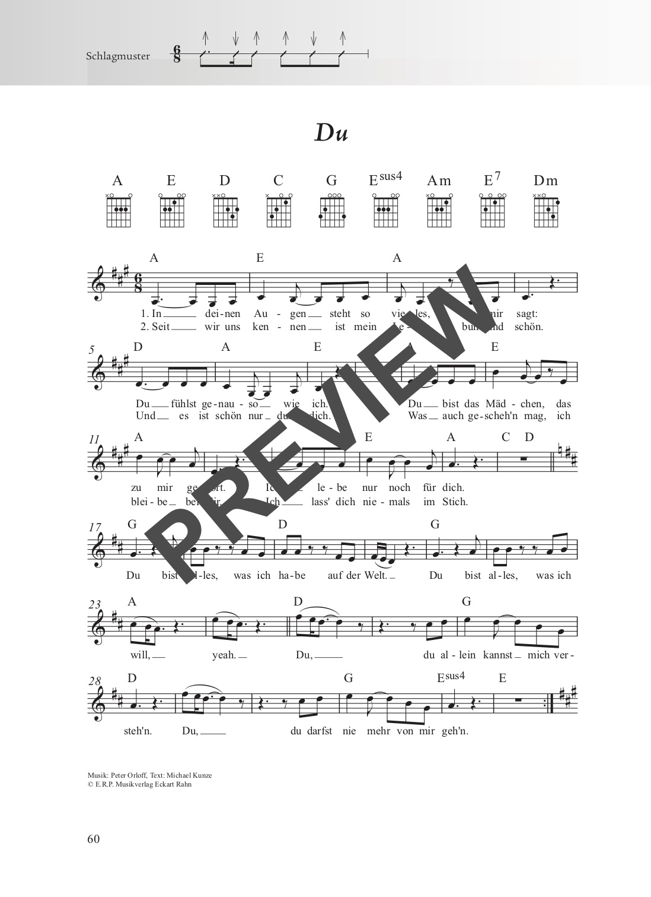
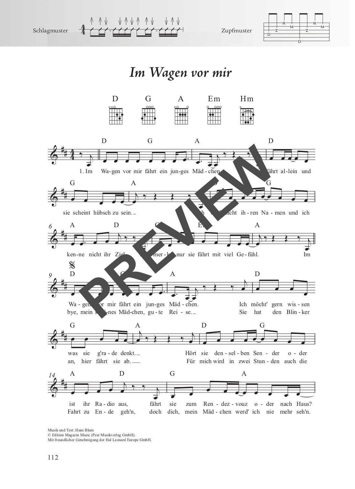

Das Schlagerbuch
für Alt und Jung
100 beliebte und bekannte Songs aus 60 Jahren Schlagergeschichte – von Roy Black über Peter Maffay bis hin zu Roland Kaiser und Nicole. Leicht arrangiert für Gitarre, speziell zum Mitsingen.
für Alt und Jung
100 beliebte und bekannte Songs aus 60 Jahren Schlagergeschichte – von Roy Black über Peter Maffay bis hin zu Roland Kaiser und Nicole. Leicht arrangiert für Gitarre, speziell zum Mitsingen.
| Ausgabe | Format | Seiten | Bindung | Preis |
|---|---|---|---|---|
| Gitarre | 18 × 25 cm | 216 | Stay-Open-Bindung | 22,00 € |
| Ukulele | 18 × 25 cm | 216 | Stay-Open-Bindung | 19,50 € |
| XXL (Gitarre + Ukulele) | 23 × 31 cm | 216 | Spiralbindung | 29,50 € |
Erhältlich bei Schott Music, Amazon, Stretta Music, Alle Noten, Thomann, Music Store und im gut sortierten Musikfachhandel.
Das Schlagerbuch enthält 100 beliebte und bekannte Songs aus den letzten 60 Jahren – viele Perlen der deutschen Unterhaltungsmusik, alle speziell zum Mitsingen arrangiert und leicht zu begleiten mit der Gitarre. Von „Schön ist es auf der Welt zu sein" von Roy Black & Anita über „Du" von Peter Maffay, „Ein bisschen Frieden" von Nicole und „Joana" von Roland Kaiser bis hin zu „Ich will Spaß" von Markus gibt es hier viele der größten Songs aus der Hitparade, vom Ballermann und vom Schlagermove.
Wie beim beliebten Fetenbuch sind die benötigten Akkordgriffe sowie Schlag- und Zupfmuster für die Begleitung allen Songs vorangestellt. Erstmals in der Reihe mit Griffbildern für Gitarre und Ukulele. Dank der Zupfmuster wird auch der Einstieg in die Welt des Folkpickings spielend leicht.
Die XXL-Version mit Spiralbindung steht perfekt auf dem Notenständer. Die Stücke sind fast immer auf maximal zwei Seiten notiert – beim Spielen muss also nicht umgeblättert werden. Noten und Texte sind groß genug, um sie auch mit bis zu einem Meter Abstand gut lesen zu können – ideal für Personen mit Sehschwäche und für das gemeinsame Singen in der Gruppe.
Alle 100 Songs zum Anhören:
100 Lieder in alphabetischer Reihenfolge:
Einen Eindruck vom Inhalt und der Gestaltung:




